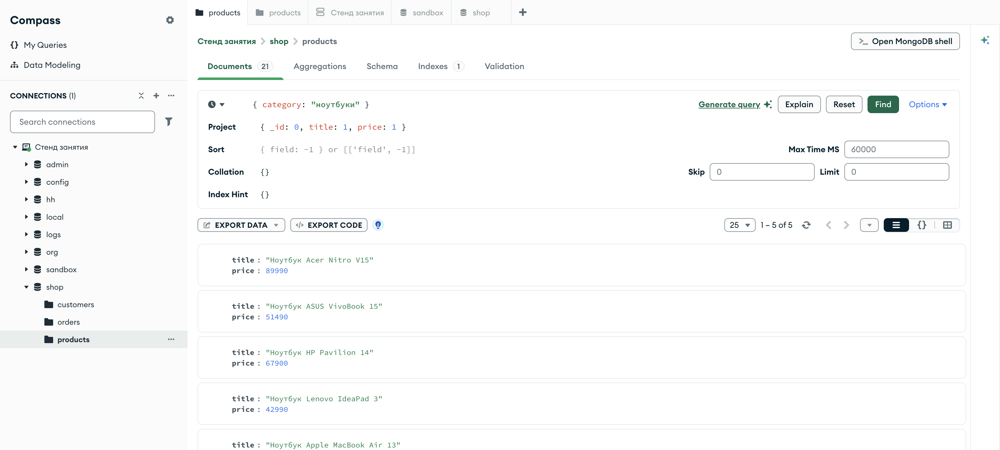

Справочник по MongoDB · модуль 1 · подключение и первые данные
Глава 1.5
Проекция:
какие поля вернуть
Второй аргумент find решает, что именно приедет с сервера. Разберём включающую и исключающую проекцию, единственное исключение из правила «нельзя смешивать», и посчитаем, сколько данных экономит одна фигурная скобка.
«Лишние поля стоят трафика и памяти на каждом запросе.»
- Категория
- Операции над данными
- Уровень
- Начальный
- Связанные темы
- Чтение и курсор,
$projectв агрегации - Зачем это знать
- Не тащить на клиент поля, которые никто не покажет
Как запускать примеры этой главы
mongodb-glava-1.5-python.zip, 59 КБmongodb-glava-1.5-ruby.zip, 58 КБmongodb-glava-1.5-go.zip, 63 КБmongodb-glava-1.5-cpp.zip, 61 КБ — все примеры главы готовыми программами, учебные базы и стенд в Docker. В README.md — запуск в Docker, если Compass нет или он не подключается, и на установленном сервере с Compass, а также что должна напечатать каждая программа.lessons/ch1_5.py — пример вставляется в конец файлаlessons/ch1_5.rb — пример вставляется в конец файлаlessons/ch1_5.go — пример внутрь скобок в конце main, функции и типы — выше mainlessons/ch1_5.cpp — пример внутрь скобок в конце main, функции — выше maincd lessons, затем python ch1_5.pycd lessons, затем python3 ch1_5.py · в Docker: docker compose run --rm python lessons/ch1_5.pycd lessons, затем ruby ch1_5.rb · в Docker: docker compose run --rm ruby lessons/ch1_5.rbcd lessons, затем go run ch1_5.go · в Docker: docker compose run --rm go lessons/ch1_5.gocd lessons, затем g++ -std=c++17 ch1_5.cpp -o prog $(pkg-config --cflags --libs libmongocxx1) && ./prog · в Docker: docker compose run --rm cpp lessons/ch1_5.cpp§1Второй аргумент find
У методов find и find_one два аргумента, и оба — документы:
Проекция — тоже документ: имя поля и 1, если поле нужно, или 0, если не нужно. По умолчанию, когда второго аргумента нет, возвращается документ целиком — со всеми полями, включая те, которые вам сейчас не пригодятся.
§2Включающая проекция
Перечисляем поля, которые хотим видеть. Всё остальное сервер не пришлёт.
for doc in products.find( {"category": "ноутбуки"}, {"title": 1, "price": 1}): print(doc)
mongocxx::options::find options; options.projection(make_document(kvp("title", 1), kvp("price", 1))); for (const auto& doc : products.find( make_document(kvp("category", "ноутбуки")), options)) { std::cout << bsoncxx::to_json(doc) << std::endl; }
cursor, _ := products.Find(ctx, bson.D{{Key: "category", Value: "ноутбуки"}}, options.Find().SetProjection(bson.D{ {Key: "title", Value: 1}, {Key: "price", Value: 1}})) var rows []bson.D cursor.All(ctx, &rows) for _, doc := range rows { fmt.Println(doc) }
products.find( { "category" => "ноутбуки" }, projection: { "title" => 1, "price" => 1 } ).each { |doc| puts doc.inspect }
{'_id': 'p-001', 'title': 'Ноутбук Lenovo IdeaPad 3', 'price': 42990}
{'_id': 'p-002', 'title': 'Ноутбук ASUS VivoBook 15', 'price': 51490}
{'_id': 'p-003', 'title': 'Ноутбук HP Pavilion 14', 'price': 67900}
{'_id': 'p-004', 'title': 'Ноутбук Apple MacBook Air 13', 'price': 114990}
{'_id': 'p-005', 'title': 'Ноутбук Acer Nitro V15', 'price': 89990}
{ "_id" : "p-001", "title" : "Ноутбук Lenovo IdeaPad 3", "price" : 42990 }
{ "_id" : "p-002", "title" : "Ноутбук ASUS VivoBook 15", "price" : 51490 }
{ "_id" : "p-003", "title" : "Ноутбук HP Pavilion 14", "price" : 67900 }
{ "_id" : "p-004", "title" : "Ноутбук Apple MacBook Air 13", "price" : 114990 }
{ "_id" : "p-005", "title" : "Ноутбук Acer Nitro V15", "price" : 89990 }
{"_id":"p-001","title":"Ноутбук Lenovo IdeaPad 3","price":{"$numberInt":"42990"}}
{"_id":"p-002","title":"Ноутбук ASUS VivoBook 15","price":{"$numberInt":"51490"}}
{"_id":"p-003","title":"Ноутбук HP Pavilion 14","price":{"$numberInt":"67900"}}
{"_id":"p-004","title":"Ноутбук Apple MacBook Air 13","price":{"$numberInt":"114990"}}
{"_id":"p-005","title":"Ноутбук Acer Nitro V15","price":{"$numberInt":"89990"}}
{"_id"=>"p-001", "title"=>"Ноутбук Lenovo IdeaPad 3", "price"=>42990}
{"_id"=>"p-002", "title"=>"Ноутбук ASUS VivoBook 15", "price"=>51490}
{"_id"=>"p-003", "title"=>"Ноутбук HP Pavilion 14", "price"=>67900}
{"_id"=>"p-004", "title"=>"Ноутбук Apple MacBook Air 13", "price"=>114990}
{"_id"=>"p-005", "title"=>"Ноутбук Acer Nitro V15", "price"=>89990}
Мы просили два поля, а приехало три: _id добавляется всегда. Это единственное поле, которое возвращается по умолчанию даже во включающей проекции, — и убирается только явно.
Проекция {"title": True, "price": True} означает то же самое. Единица короче и привычнее по документации, но если в вашем коде уже принято писать True, база не возразит. Значение 1 и любое ненулевое число, и True — для сервера одно и то же.
§3Как убрать _id
Ключ выбрасывают, когда результат идёт наружу: в CSV-выгрузку, в ответ API, в отчёт. Для этого его указывают явным нулём.
for doc in products.find( {"category": "ноутбуки"}, {"_id": 0, "title": 1, "price": 1}).limit(2): print(doc)
mongocxx::options::find options; options.projection(make_document( kvp("_id", 0), kvp("title", 1), kvp("price", 1))); options.limit(2); for (const auto& doc : products.find( make_document(kvp("category", "ноутбуки")), options)) { std::cout << bsoncxx::to_json(doc) << std::endl; }
cursor, _ := products.Find(ctx, bson.D{{Key: "category", Value: "ноутбуки"}}, options.Find().SetProjection(bson.D{ {Key: "_id", Value: 0}, {Key: "title", Value: 1}, {Key: "price", Value: 1}}).SetLimit(2)) var rows []bson.D cursor.All(ctx, &rows) for _, doc := range rows { fmt.Println(doc) }
products.find( { "category" => "ноутбуки" }, projection: { "_id" => 0, "title" => 1, "price" => 1 } ).first(2).each { |doc| puts doc.inspect }
{'title': 'Ноутбук Lenovo IdeaPad 3', 'price': 42990}
{'title': 'Ноутбук ASUS VivoBook 15', 'price': 51490}
{ "title" : "Ноутбук Lenovo IdeaPad 3", "price" : 42990 }
{ "title" : "Ноутбук ASUS VivoBook 15", "price" : 51490 }
{"title":"Ноутбук Lenovo IdeaPad 3","price":{"$numberInt":"42990"}}
{"title":"Ноутбук ASUS VivoBook 15","price":{"$numberInt":"51490"}}
{"title"=>"Ноутбук Lenovo IdeaPad 3", "price"=>42990}
{"title"=>"Ноутбук ASUS VivoBook 15", "price"=>51490}
Получилось ровно два поля. В одной проекции здесь встретились и 1, и 0, и сервер не возразил: _id — единственное поле, которое разрешено выключать в любой проекции. Подробнее в §5.
§4Исключающая проекция
Обратный подход: вернуть документ целиком, но без нескольких тяжёлых полей. Так делают, когда полей много и перечислять нужные дольше, чем ненужные.
doc = products.find_one( {"_id": "p-020"}, {"stock": 0, "specs": 0, "added": 0}) print(doc)
mongocxx::options::find options; options.projection(make_document( kvp("stock", 0), kvp("specs", 0), kvp("added", 0))); auto doc = products.find_one(make_document(kvp("_id", "p-020")), options); std::cout << bsoncxx::to_json(*doc) << std::endl;
var doc bson.D products.FindOne(ctx, bson.D{{Key: "_id", Value: "p-020"}}, options.FindOne().SetProjection(bson.D{ {Key: "stock", Value: 0}, {Key: "specs", Value: 0}, {Key: "added", Value: 0}}), ).Decode(&doc) fmt.Println(doc)
doc = products.find( { "_id" => "p-020" }, projection: { "stock" => 0, "specs" => 0, "added" => 0 } ).first puts doc.inspect
{'_id': 'p-020', 'sku': 'SKU-AC-020', 'title': 'Кабель USB-C 2 м', 'brand': 'OEM', 'category': 'аксессуары', 'price': 790, 'rating': 4.0, 'reviews': 39}
{ "_id" : "p-020", "sku" : "SKU-AC-020", "title" : "Кабель USB-C 2 м", "brand" : "OEM", "category" : "аксессуары", "price" : 790, "rating" : 4.0, "reviews" : 39 }
{"_id":"p-020","sku":"SKU-AC-020","title":"Кабель USB-C 2 м","brand":"OEM","category":"аксессуары","price":{"$numberInt":"790"},"rating":{"$numberDouble":"4.0"},"reviews":{"$numberInt":"39"}}
{"_id"=>"p-020", "sku"=>"SKU-AC-020", "title"=>"Кабель USB-C 2 м", "brand"=>"OEM", "category"=>"аксессуары", "price"=>790, "rating"=>4.0, "reviews"=>39}
Три поля исчезли, остальные вернулись как есть. У подхода есть особенность: новое поле, добавленное в документы завтра, попадёт в такой ответ автоматически. Иногда это удобно, иногда — способ случайно отдать наружу поле, которое отдавать не собирались. В ответах API надёжнее перечислять нужные поля явно.
§5Смешивать нельзя
В одной проекции нельзя одновременно включать одни поля и исключать другие. Сервер откажется выполнять такой запрос.
products.find_one({}, {"title": 1, "stock": 0})
mongocxx::options::find options; options.projection(make_document(kvp("title", 1), kvp("stock", 0))); // запрос уходит на сервер при первом чтении курсора — там и ошибка try { for (const auto& doc : products.find(make_document(), options)) {} } catch (const mongocxx::operation_exception& error) { std::cout << error.what() << std::endl; }
_, err := products.Find(ctx, bson.D{}, options.Find().SetProjection( bson.D{{Key: "title", Value: 1}, {Key: "stock", Value: 0}})) fmt.Println(err)
products.find({}, projection: { "title" => 1, "stock" => 0 }).first
OperationFailure: Cannot do exclusion on field stock in inclusion projection
Cannot do exclusion on field stock in inclusion projection: server error code 31254: generic server error
(Location31254) Cannot do exclusion on field stock in inclusion projection
[31254:Location31254]: Cannot do exclusion on field stock in inclusion projection (on localhost:27017, modern retry, attempt 1) (Mongo::Error::OperationFailure)
Логика простая: вы либо перечисляете белый список, либо чёрный. Смешение неоднозначно — непонятно, что делать с полями, которых нет ни в одном списке. Единственное исключение — _id: его разрешено выключать в любой проекции, потому что он подразумевается всегда.
| Проекция | Что вернётся | Допустимо |
|---|---|---|
{"title": 1, "price": 1} | _id, title, price | да |
{"_id": 0, "title": 1} | только title | да, _id — исключение |
{"stock": 0, "specs": 0} | всё, кроме этих двух полей | да |
{"title": 1, "stock": 0} | — | нет, OperationFailure |
{} | документ целиком | да, то же, что без проекции |
§6Вложенные поля в проекции
Путь через точку работает и здесь: можно забрать одно поле из вложенного документа, не вытаскивая его целиком.
for doc in orders.find( {"status": "доставлен"}, {"_id": 0, "number": 1, "total": 1, "delivery.city": 1}).limit(3): print(doc)
mongocxx::options::find options; options.projection(make_document(kvp("_id", 0), kvp("number", 1), kvp("total", 1), kvp("delivery.city", 1))); options.limit(3); for (const auto& doc : orders.find( make_document(kvp("status", "доставлен")), options)) { std::cout << bsoncxx::to_json(doc) << std::endl; }
cursor, _ := orders.Find(ctx, bson.D{{Key: "status", Value: "доставлен"}}, options.Find().SetProjection(bson.D{ {Key: "_id", Value: 0}, {Key: "number", Value: 1}, {Key: "total", Value: 1}, {Key: "delivery.city", Value: 1}}).SetLimit(3)) var rows []bson.D cursor.All(ctx, &rows) for _, doc := range rows { fmt.Println(doc) }
orders.find( { "status" => "доставлен" }, projection: { "_id" => 0, "number" => 1, "total" => 1, "delivery.city" => 1 } ).first(3).each { |doc| puts doc.inspect }
{'number': '2026-0001', 'total': 5980, 'delivery': {'city': 'Ярославль'}}
{'number': '2026-0003', 'total': 86880, 'delivery': {'city': 'Новосибирск'}}
{'number': '2026-0004', 'total': 106210, 'delivery': {'city': 'Москва'}}
{ "number" : "2026-0001", "total" : 5980, "delivery" : { "city" : "Ярославль" } }
{ "number" : "2026-0003", "total" : 86880, "delivery" : { "city" : "Новосибирск" } }
{ "number" : "2026-0004", "total" : 106210, "delivery" : { "city" : "Москва" } }
{"number":"2026-0001","total":{"$numberInt":"5980"},"delivery":{"city":"Ярославль"}}
{"number":"2026-0003","total":{"$numberInt":"86880"},"delivery":{"city":"Новосибирск"}}
{"number":"2026-0004","total":{"$numberInt":"106210"},"delivery":{"city":"Москва"}}
{"number"=>"2026-0001", "total"=>5980, "delivery"=>{"city"=>"Ярославль"}}
{"number"=>"2026-0003", "total"=>86880, "delivery"=>{"city"=>"Новосибирск"}}
{"number"=>"2026-0004", "total"=>106210, "delivery"=>{"city"=>"Москва"}}
Структура сохраняется: delivery остаётся вложенным документом, просто с одним полем внутри. «Поднять» значение на верхний уровень проекция не умеет — для этого нужен $project в агрегации, глава 4.2.
§7Сколько это экономит
На двадцати одном товаре разницы не почувствуешь. Посчитаем на заказах: полный документ заказа против трёх полей.
При выводе списка заказов на экран разница — 68 килобайт против 10: в шесть с половиной раз меньше по сети и в памяти. На коллекции в миллион документов та же проекция превращает гигабайты в сотни мегабайт. И это ещё до всякой оптимизации запросов.
Правило: если поле не показывают и по нему не считают — его не запрашивают. В первую очередь это касается больших массивов вроде items в заказе: список позиций не нужен, когда на экране только номер и сумма.
§8Проекция в Compass
В Compass проекция живёт в поле Project — оно раскрывается кнопкой Options справа от строки фильтра. Пишется туда ровно тот же документ.

shop.products — фильтр по категории и проекция { title: 1, price: 1, _id: 0 }Приём для отладки: сначала подобрать фильтр без проекции, глядя на документы целиком, а потом добавить проекцию и убедиться, что нужные поля на месте. Готовый запрос переносится в код целиком — оба документа, фильтр и проекция.
§9Частые ошибки
| Что написано | Что происходит | Как правильно |
|---|---|---|
find({}, ["title", "price"]) | Список вместо документа: драйвер примет, но это менее очевидная форма | Писать документом: {"title": 1, "price": 1} |
{"title": 1, "stock": 0} | OperationFailure: Cannot do exclusion on field stock in inclusion projection | Выбрать одно: либо белый список, либо чёрный |
Ожидание, что _id исчезнет сам | _id приезжает всегда | Указать "_id": 0 явно |
{"delivery.city": 1} и ожидание строки | Вернётся {'delivery': {'city': ...}} — структура сохраняется | Разворачивать в коде или использовать $project в агрегации |
Проекция вместо фильтра: find({"title": 1}) | Ищет документы, где title равен числу 1. Результат пуст | Фильтр — первый аргумент, проекция — в options |
| Что написано | Что происходит | Как правильно |
|---|---|---|
| Проекция передана как фильтр | Пустой результат: документ ушёл первым аргументом find | Проекция задаётся через mongocxx::options::find |
kvp("title", 1), kvp("stock", 0) | Cannot do exclusion on field stock in inclusion projection: server error code 31254 | Выбрать одно: либо белый список, либо чёрный |
Ожидание, что _id исчезнет сам | _id приезжает всегда | Добавить kvp("_id", 0) |
| Чтение поля, отсечённого проекцией | cannot get … from an uninitialized element: view is invalid | Проверять if (doc["stock"]) или не отсекать нужное поле |
options переиспользованы между запросами | Проекция и сортировка «прилипают» к следующему find | Заводить options на каждый запрос |
| Что написано | Что происходит | Как правильно |
|---|---|---|
Проекция передана вторым аргументом Find | Компилятор не пропустит: вторым идёт *options.FindOptionsBuilder | options.Find().SetProjection(...) |
SetProjection(bson.D{{"title",1},{"stock",0}}) | (Location31254) Cannot do exclusion on field stock in inclusion projection | Выбрать одно: либо белый список, либо чёрный |
| Поле есть в проекции, но нет в структуре | Значение молча теряется при декодировании | Добавить поле в структуру с тегом bson или декодировать в bson.M |
options.Find() вместо options.FindOne() | Компилятор не пропустит: у FindOne свой тип настроек | Для одного документа — options.FindOne().SetProjection(...) |
Ожидание, что _id исчезнет сам | _id приезжает всегда | {Key: "_id", Value: 0} в проекции |
| Что написано | Что происходит | Как правильно |
|---|---|---|
| Проекция вторым позиционным аргументом | Драйвер ждёт именованный параметр и молча его не применит | find(filter, projection: { … }) |
projection: { "title" => 1, "stock" => 0 } | [31254:Location31254]: Cannot do exclusion on field stock in inclusion projection | Выбрать одно: либо белый список, либо чёрный |
Ожидание, что _id исчезнет сам | _id приезжает всегда | Указать "_id" => 0 явно |
projection: { "delivery.city" => 1 } и ожидание строки | Вернётся {"delivery"=>{"city"=>…}} — структура сохраняется | Разворачивать в коде или использовать $project в агрегации |
| Символьные ключи в проекции | Ключ не совпадает с именем поля в документе | Имена полей пишут строками |
§10Проверьте себя
Мы попросили {"title": 1}, а получили два поля. Почему?
_id возвращается всегда, если не выключен явно. Чтобы получить только название, нужна проекция {"_id": 0, "title": 1}.
Почему нельзя написать {"title": 1, "stock": 0}?
Потому что непонятно, что делать с остальными полями: включать их (раз есть исключение) или исключать (раз есть включение). Сервер отказывается угадывать и возвращает OperationFailure. Единственное поле, которое можно выключить в любой проекции, — _id.
Когда исключающая проекция опаснее включающей?
Когда результат уходит наружу. Поле, добавленное в документы позже, автоматически попадёт в ответ — вместе с данными, которые отдавать не собирались. В API безопаснее перечислять нужные поля явно.
Что вернёт {"_id": 0, "delivery.city": 1} на заказе?
Документ вида {'delivery': {'city': 'Москва'}}. Проекция сохраняет вложенность: она отбирает поля, но не меняет форму документа.
Зачем нужна проекция, если можно отбросить лишние поля в Python?
Потому что лишние поля к этому моменту уже проехали по сети и заняли память. Проекция отсекает их на сервере: меньше трафика, меньше работы клиенту, меньше времени ответа.
§11Шпаргалка
col.find({...},
{"_id": 0, "title": 1})
col.find({...},
{"items": 0})
{"delivery.city": 1}
# вернётся вложенным
db.products.find(
{category:"ноутбуки"},
{_id:0, title:1, price:1})
options.projection(make_document(
kvp("_id", 0), kvp("title", 1)));
col.find(filter, options);
options.projection(
make_document(kvp("items", 0)));
kvp("delivery.city", 1)
// вернётся вложенным
// kvp("title", 1) + kvp("stock", 0)
// → server error 31254
options.Find().SetProjection(bson.D{
{Key: "_id", Value: 0},
{Key: "title", Value: 1}})
options.Find().SetProjection(
bson.D{{Key: "items", Value: 0}})
{Key: "delivery.city", Value: 1}
// вернётся вложенным
options.FindOne().SetProjection(...)
col.FindOne(ctx, filter, opts)
col.find({ ... },
projection: { "_id" => 0, "title" => 1 })
col.find({ ... },
projection: { "items" => 0 })
projection: { "delivery.city" => 1 }
# вернётся вложенным
# { "title" => 1, "stock" => 0 }
# → Mongo::Error::OperationFailure
Итог главы
Проекция — второй документ в find: единицы означают «вернуть эти поля», нули — «вернуть все, кроме этих». Смешивать нельзя, кроме _id, который выключается всегда и приезжает по умолчанию. Вложенные поля адресуются через точку и сохраняют структуру. Экономия начинается сразу и растёт вместе с коллекцией. Дальше — порядок и порции: сортировка, ограничение и постраничный вывод.